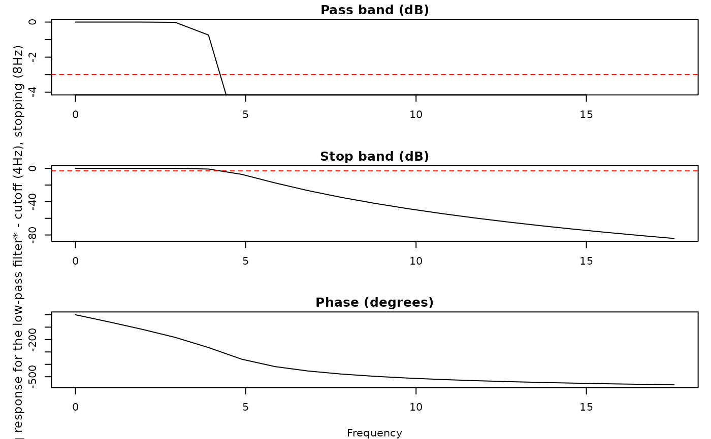

Split eyeris database into N parquet files by data type
Source:R/utils-parquet-split.R
eyeris_db_to_parquet.RdUtility function that takes an eyerisdb DuckDB database and splits it into N reasonably sized parquet files for easy management with GitHub, downloading, and distribution. Data is first grouped by table type (timeseries, epochs, events, etc.) since each has different columnar structures, then each group is split into the specified number of files. Files are organized in folders matching the database name for easy identification.
Usage
eyeris_db_to_parquet(
bids_dir,
db_path = "my-project",
n_files_per_type = 1,
output_dir = NULL,
max_file_size = 512,
data_types = NULL,
verbose = TRUE,
include_metadata = TRUE,
epoch_labels = NULL,
group_by_epoch_label = TRUE
)Arguments
- bids_dir
Path to the BIDS directory containing the database
- db_path
Database name (defaults to "my-project", becomes "my-project.eyerisdb")
- n_files_per_type
Number of parquet files to create per data type (default: 1)
- output_dir
Directory to save parquet files (defaults to bids_dir/derivatives/parquet)
- max_file_size
Maximum file size in MB per parquet file (default: 512) Used as a constraint when n_files_per_type would create files larger than this
- data_types
Vector of data types to include. If NULL (default), includes all available. Valid types: "timeseries", "epochs", "epoch_summary", "events", "blinks", "confounds_*"
- verbose
Whether to print progress messages (default: TRUE)
- include_metadata
Whether to include eyeris metadata columns in output (default: TRUE)
- epoch_labels
Optional character vector of epoch labels to include (e.g., "prepostprobe"). Only applies to epoch-related data types. If NULL, includes all labels.
- group_by_epoch_label
If TRUE, processes epoch-related data types separately by epoch label to reduce memory footprint and produce label-specific parquet files (default: TRUE).
Database Safety
This function creates temporary tables during parquet export when the arrow package is not available. All temporary tables are automatically cleaned up, but if the process crashes, leftover tables may remain. The function checks for and warns about existing temporary tables before starting.
Examples
# \donttest{
# create demo database
demo_data <- eyelink_asc_demo_dataset()
demo_data |>
eyeris::glassbox() |>
eyeris::epoch(
events = "PROBE_{startstop}_{trial}",
limits = c(-1, 1),
label = "prePostProbe"
) |>
eyeris::bidsify(
bids_dir = tempdir(),
participant_id = "001",
session_num = "01",
task_name = "memory",
db_enabled = TRUE,
db_path = "memory-task"
)
#> ✔ [2025-08-10 07:30:01] [OKAY] Running eyeris::load_asc()
#> ℹ [2025-08-10 07:30:01] [INFO] Processing block: block_1
#> ✔ [2025-08-10 07:30:01] [OKAY] Running eyeris::deblink() for block_1
#> ✔ [2025-08-10 07:30:01] [OKAY] Running eyeris::detransient() for block_1
#> ✔ [2025-08-10 07:30:01] [OKAY] Running eyeris::interpolate() for block_1
#> ✔ [2025-08-10 07:30:01] [OKAY] Running eyeris::lpfilt() for block_1

#> ! [2025-08-10 07:30:01] [WARN] Skipping eyeris::downsample() for block_1
#> ! [2025-08-10 07:30:01] [WARN] Skipping eyeris::bin() for block_1
#> ! [2025-08-10 07:30:01] [WARN] Skipping eyeris::detrend() for block_1
#> ✔ [2025-08-10 07:30:01] [OKAY] Running eyeris::zscore() for block_1
#> ℹ [2025-08-10 07:30:01] [INFO] Block processing summary:
#> ℹ [2025-08-10 07:30:01] [INFO] block_1: OK (steps: 6, latest:
#> pupil_raw_deblink_detransient_interpolate_lpfilt_z)
#> ✔ [2025-08-10 07:30:01] [OKAY] Running eyeris::summarize_confounds()
#> ℹ [2025-08-10 07:30:01] [INFO] Epoching pupil data...
#> ℹ [2025-08-10 07:30:01] [INFO] Block 1: found 10 matching events for
#> PROBEstartstoptrial
#> ✔ [2025-08-10 07:30:01] [OKAY] Done!
#> ✔ [2025-08-10 07:30:01] [OKAY] Block 1: pupil data from 10 unique event
#> messages extracted
#> ✔ [2025-08-10 07:30:01] [OKAY] Pupil epoching completed in 0.10 seconds
#> ℹ [2025-08-10 07:30:01] [INFO] Recalculating epoched confounds for new
#> epochs...
#> ℹ [2025-08-10 07:30:01] [INFO] Starting BIDSify for sub-001 (monocular)
#> ℹ [2025-08-10 07:30:01] [INFO] Only 1 block detected...
#> ℹ [2025-08-10 07:30:01] [INFO] Using run_num = 1 for single block data
#> ℹ [2025-08-10 07:30:01] [INFO] Filtered epochs: epoch_prePostProbe
#> ℹ [2025-08-10 07:30:01] [INFO] Epoch names to save: epoch_prePostProbe
#> ℹ [2025-08-10 07:30:01] [INFO] Parallel processing detected for job unknown
#> (PID: 7438), using temporary database
#> ✔ [2025-08-10 07:30:01] [OKAY] Created temporary database:
#> /tmp/Rtmp2LYk2h/derivatives/memory-task_temp_7438_20250810_073001_628.eyerisdb
#> ℹ [2025-08-10 07:30:01] [INFO] epoch_prePostProbe:
#> ℹ [2025-08-10 07:30:01] [INFO] block_1: data.frame with 20000 rows
#> ℹ [2025-08-10 07:30:01] [INFO] info: list with 1 elements
#> ! [2025-08-10 07:30:01] [WARN] '/tmp/Rtmp2LYk2h' already exists. Skipping
#> creation...
#> ! [2025-08-10 07:30:01] [WARN] '/tmp/Rtmp2LYk2h/derivatives' already exists.
#> Skipping creation...
#> ! [2025-08-10 07:30:01] [WARN] '/tmp/Rtmp2LYk2h/derivatives/sub-001' already
#> exists. Skipping creation...
#> ! [2025-08-10 07:30:01] [WARN] '/tmp/Rtmp2LYk2h/derivatives/sub-001/ses-01'
#> already exists. Skipping creation...
#> ! [2025-08-10 07:30:01] [WARN] '/tmp/Rtmp2LYk2h/derivatives/sub-001/ses-01/eye'
#> already exists. Skipping creation...
#> ℹ [2025-08-10 07:30:01] [INFO] Writing blinks data to
#> /tmp/Rtmp2LYk2h/derivatives/sub-001/ses-01/eye/sub-001_ses-01_task-memory_run-01_desc-blinks.csv...
#> ✔ [2025-08-10 07:30:01] [OKAY] Wrote blinks data (1 rows) to CSV and database
#> ℹ [2025-08-10 07:30:01] [INFO] Writing events data to
#> /tmp/Rtmp2LYk2h/derivatives/sub-001/ses-01/eye/sub-001_ses-01_task-memory_run-01_desc-events.csv...
#> ✔ [2025-08-10 07:30:01] [OKAY] Wrote events data (67 rows) to CSV and database
#> ℹ [2025-08-10 07:30:01] [INFO] Processing single-run epoch: epoch_prePostProbe
#> (label: prePostProbe)
#> ℹ [2025-08-10 07:30:01] [INFO] Block block_1 for epoch epoch_prePostProbe has
#> 20000 rows
#> ! [2025-08-10 07:30:01] [WARN] No baseline structure found for epoch label:
#> prePostProbe
#> ℹ [2025-08-10 07:30:01] [INFO] Found epoch events in structure:
#> PROBE_{startstop}_{trial}
#> ! [2025-08-10 07:30:01] [WARN] No baseline structure found for epoch label:
#> prePostProbe
#> ! [2025-08-10 07:30:01] [WARN] No baseline structure found for epoch label:
#> prePostProbe
#> ! [2025-08-10 07:30:01] [WARN] No baseline structure found for epoch label:
#> prePostProbe
#> ✔ [2025-08-10 07:30:02] [OKAY] Wrote epochs data (20000 rows) to CSV and
#> database
#> ✔ [2025-08-10 07:30:02] [OKAY] Wrote timeseries data (20767 rows) to CSV and
#> database
#> ✔ [2025-08-10 07:30:02] [OKAY] Wrote run_confounds data (6 rows) to CSV and
#> database
#> ! [2025-08-10 07:30:02] [WARN] No baseline structure found for epoch label:
#> prePostProbe
#> ℹ [2025-08-10 07:30:02] [INFO] Created epoch summary for epoch_prePostProbe
#> with 9 fields
#> ✔ [2025-08-10 07:30:02] [OKAY] Wrote epoch_summary data (1 rows) to CSV and
#> database
#> ! [2025-08-10 07:30:02] [WARN] No baseline structure found for epoch label:
#> prePostProbe
#> ℹ [2025-08-10 07:30:02] [INFO] Found epoch events in structure:
#> PROBE_{startstop}_{trial}
#> ! [2025-08-10 07:30:02] [WARN] No baseline structure found for epoch label:
#> prePostProbe
#> ! [2025-08-10 07:30:02] [WARN] No baseline structure found for epoch label:
#> prePostProbe
#> ✔ [2025-08-10 07:30:02] [OKAY] Wrote confounds_summary data (1 rows) to CSV and
#> database
#> ✔ [2025-08-10 07:30:02] [OKAY] Wrote confounds_summary data (1 rows) to CSV and
#> database
#> ✔ [2025-08-10 07:30:02] [OKAY] Wrote confounds_summary data (1 rows) to CSV and
#> database
#> ✔ [2025-08-10 07:30:02] [OKAY] Wrote confounds_summary data (1 rows) to CSV and
#> database
#> ✔ [2025-08-10 07:30:02] [OKAY] Wrote confounds_summary data (1 rows) to CSV and
#> database
#> ✔ [2025-08-10 07:30:02] [OKAY] Wrote confounds_summary data (1 rows) to CSV and
#> database
#> ✔ [2025-08-10 07:30:02] [OKAY] Wrote confounds_summary data (1 rows) to CSV and
#> database
#> ✔ [2025-08-10 07:30:02] [OKAY] Wrote confounds_summary data (1 rows) to CSV and
#> database
#> ✔ [2025-08-10 07:30:02] [OKAY] Wrote confounds_summary data (1 rows) to CSV and
#> database
#> ✔ [2025-08-10 07:30:02] [OKAY] Wrote confounds_summary data (1 rows) to CSV and
#> database
#> ! [2025-08-10 07:30:02] [WARN] No baseline structure found for epoch label:
#> prePostProbe
#> ℹ [2025-08-10 07:30:02] [INFO] Found epoch events in epoch structure:
#> PROBE_{startstop}_{trial}
#> ! [2025-08-10 07:30:02] [WARN] No baseline structure found for epoch label:
#> prePostProbe
#> ! [2025-08-10 07:30:02] [WARN] No baseline structure found for epoch label:
#> prePostProbe
#> ✔ [2025-08-10 07:30:02] [OKAY] Wrote confounds_events data (6 rows) to CSV and
#> database
#> ✔ [2025-08-10 07:30:02] [OKAY] Wrote confounds_events data (6 rows) to CSV and
#> database
#> ✔ [2025-08-10 07:30:02] [OKAY] Wrote confounds_events data (6 rows) to CSV and
#> database
#> ✔ [2025-08-10 07:30:02] [OKAY] Wrote confounds_events data (6 rows) to CSV and
#> database
#> ✔ [2025-08-10 07:30:02] [OKAY] Wrote confounds_events data (6 rows) to CSV and
#> database
#> ✔ [2025-08-10 07:30:02] [OKAY] Wrote confounds_events data (6 rows) to CSV and
#> database
#> ✔ [2025-08-10 07:30:02] [OKAY] Wrote confounds_events data (6 rows) to CSV and
#> database
#> ✔ [2025-08-10 07:30:02] [OKAY] Wrote confounds_events data (6 rows) to CSV and
#> database
#> ✔ [2025-08-10 07:30:02] [OKAY] Wrote confounds_events data (6 rows) to CSV and
#> database
#> ✔ [2025-08-10 07:30:02] [OKAY] Wrote confounds_events data (6 rows) to CSV and
#> database
#> ! [2025-08-10 07:30:02] [WARN]
#> '/tmp/Rtmp2LYk2h/derivatives/sub-001/ses-01/source/figures' already exists.
#> Skipping creation...
#> ! [2025-08-10 07:30:02] [WARN]
#> '/tmp/Rtmp2LYk2h/derivatives/sub-001/ses-01/source/figures/run-01' already
#> exists. Skipping creation...
#> ℹ [2025-08-10 07:30:02] [INFO] Plotting block 1 with sampling rate 1000 Hz from
#> possible blocks: 1
#> ℹ [2025-08-10 07:30:02] [INFO] Plotting block 1 with sampling rate 1000 Hz from
#> possible blocks: 1
#> ℹ [2025-08-10 07:30:02] [INFO] Plotting block 1 with sampling rate 1000 Hz from
#> possible blocks: 1
#> ℹ [2025-08-10 07:30:03] [INFO] Plotting block 1 with sampling rate 1000 Hz from
#> possible blocks: 1
#> ℹ [2025-08-10 07:30:03] [INFO] Plotting block 1 with sampling rate 1000 Hz from
#> possible blocks: 1
#> ℹ [2025-08-10 07:30:03] [INFO] Plotting block 1 with sampling rate 1000 Hz from
#> possible blocks: 1
#> ℹ [2025-08-10 07:30:03] [INFO] Plotting block 1 with sampling rate 1000 Hz from
#> possible blocks: 1
#> ℹ [2025-08-10 07:30:03] [INFO] Plotting block 1 with sampling rate 1000 Hz from
#> possible blocks: 1
#> ℹ [2025-08-10 07:30:03] [INFO] Plotting block 1 with sampling rate 1000 Hz from
#> possible blocks: 1
#> ℹ [2025-08-10 07:30:03] [INFO] Plotting block 1 with sampling rate 1000 Hz from
#> possible blocks: 1
#> ℹ [2025-08-10 07:30:03] [INFO] Plotting block 1 with sampling rate 1000 Hz from
#> possible blocks: 1
#> ℹ [2025-08-10 07:30:04] [INFO] Plotting block 1 with sampling rate 1000 Hz from
#> possible blocks: 1
#> ℹ [2025-08-10 07:30:04] [INFO] Plotting block 1 with sampling rate 1000 Hz from
#> possible blocks: 1
#> ℹ [2025-08-10 07:30:04] [INFO] Plotting block 1 with sampling rate 1000 Hz from
#> possible blocks: 1
#> ℹ [2025-08-10 07:30:04] [INFO] Plotting block 1 with sampling rate 1000 Hz from
#> possible blocks: 1
#> ℹ [2025-08-10 07:30:04] [INFO] Plotting block 1 with sampling rate 1000 Hz from
#> possible blocks: 1
#> ℹ [2025-08-10 07:30:04] [INFO] Plotting block 1 with sampling rate 1000 Hz from
#> possible blocks: 1
#> ℹ [2025-08-10 07:30:04] [INFO] Plotting block 1 with sampling rate 1000 Hz from
#> possible blocks: 1
#> ! [2025-08-10 07:30:04] [WARN]
#> '/tmp/Rtmp2LYk2h/derivatives/sub-001/ses-01/source/figures/run-01' already
#> exists. Skipping creation...
#> ✔ [2025-08-10 07:30:05] [OKAY] Created gaze heatmap for run-01
#> ! [2025-08-10 07:30:05] [WARN]
#> '/tmp/Rtmp2LYk2h/derivatives/sub-001/ses-01/source/figures/run-01' already
#> exists. Skipping creation...
#> ℹ [2025-08-10 07:30:05] [INFO]
#> '/tmp/Rtmp2LYk2h/derivatives/sub-001/ses-01/source/figures/run-01/epoch_prePostProbe'
#> does not exist. Creating...
#> ✔ [2025-08-10 07:30:05] [OKAY] BIDS directory successfully created at:
#> '/tmp/Rtmp2LYk2h/derivatives/sub-001/ses-01/source/figures/run-01/epoch_prePostProbe'
#> ✔ [2025-08-10 07:30:12] [OKAY] Created epoch images zip:
#> /tmp/Rtmp2LYk2h/derivatives/sub-001/ses-01/source/figures/run-01/epoch_prePostProbe/run-01.zip
#> (70 images)
#> ℹ [2025-08-10 07:30:12] [INFO] Using absolute zip file path:
#> /tmp/Rtmp2LYk2h/derivatives/sub-001/ses-01/source/figures/run-01/epoch_prePostProbe/run-01.zip
#> ✔ [2025-08-10 07:30:12] [OKAY] Embedded zip file as data URL (7903929 bytes)
#>
#>
#> processing file: sub-001_epoch-prePostProbe_run-01.Rmd
#> 1/5
#> 2/5 [citation]
#> 3/5
#> 4/5 [session-info]
#> 5/5
#> output file: sub-001_epoch-prePostProbe_run-01.knit.md
#> /opt/hostedtoolcache/pandoc/3.1.11/x64/pandoc +RTS -K512m -RTS sub-001_epoch-prePostProbe_run-01.knit.md --to html4 --from markdown+autolink_bare_uris+tex_math_single_backslash --output sub-001_epoch-prePostProbe_run-01.html --lua-filter /home/runner/work/_temp/Library/rmarkdown/rmarkdown/lua/pagebreak.lua --lua-filter /home/runner/work/_temp/Library/rmarkdown/rmarkdown/lua/latex-div.lua --embed-resources --standalone --variable bs3=TRUE --section-divs --template /home/runner/work/_temp/Library/rmarkdown/rmd/h/default.html --no-highlight --variable highlightjs=1 --variable theme=bootstrap --css /home/runner/work/_temp/Library/eyeris/rmarkdown/css/report.css --mathjax --variable 'mathjax-url=https://mathjax.rstudio.com/latest/MathJax.js?config=TeX-AMS-MML_HTMLorMML' --include-in-header /tmp/Rtmp2LYk2h/rmarkdown-str1d0e52044968.html
#>
#> Output created: sub-001_epoch-prePostProbe_run-01.html
#> ! [2025-08-10 07:30:20] [WARN] Skipping block info for epoch 1 - no valid data
#> ℹ [2025-08-10 07:30:20] [INFO] Removing duplicate plain epoch directory:
#> /tmp/Rtmp2LYk2h/derivatives/sub-001/ses-01/source/figures/run-01/epoch_prePostProbe
#> ! [2025-08-10 07:30:20] [WARN] Metadata file already exists for 1:
#> /tmp/Rtmp2LYk2h/derivatives/sub-001/ses-01/source/logs/run-01_metadata.json
#> ! [2025-08-10 07:30:20] [WARN] Metadata file already exists for 3:
#> /tmp/Rtmp2LYk2h/derivatives/sub-001/ses-01/source/logs/run-03_metadata.json
#> ! [2025-08-10 07:30:20] [WARN] No detrend data found for run-01
#>
#>
#> processing file: sub-001.Rmd
#> 1/5
#> 2/5 [citation]
#> 3/5
#> 4/5 [session-info]
#> 5/5
#> output file: sub-001.knit.md
#> /opt/hostedtoolcache/pandoc/3.1.11/x64/pandoc +RTS -K512m -RTS sub-001.knit.md --to html4 --from markdown+autolink_bare_uris+tex_math_single_backslash --output sub-001.html --lua-filter /home/runner/work/_temp/Library/rmarkdown/rmarkdown/lua/pagebreak.lua --lua-filter /home/runner/work/_temp/Library/rmarkdown/rmarkdown/lua/latex-div.lua --embed-resources --standalone --variable bs3=TRUE --section-divs --table-of-contents --toc-depth 6 --variable toc_float=1 --variable toc_selectors=h1,h2,h3,h4,h5,h6 --variable toc_collapsed=1 --variable toc_smooth_scroll=1 --variable toc_print=1 --template /home/runner/work/_temp/Library/rmarkdown/rmd/h/default.html --no-highlight --variable highlightjs=1 --variable theme=bootstrap --css /home/runner/work/_temp/Library/eyeris/rmarkdown/css/report.css --mathjax --variable 'mathjax-url=https://mathjax.rstudio.com/latest/MathJax.js?config=TeX-AMS-MML_HTMLorMML' --include-in-header /tmp/Rtmp2LYk2h/rmarkdown-str1d0e7db47c7a.html
#>
#> Output created: sub-001.html
#> ℹ [2025-08-10 07:30:21] [INFO] Merging temporary database from job unknown
#> (PID: 7438) into main database
#> ℹ [2025-08-10 07:30:21] [INFO] Merging 8 tables from temporary database to main
#> database
#> ℹ [2025-08-10 07:30:22] [INFO] Created new table 'blinks_001_01_memory_run01'
#> with 1 rows
#> ℹ [2025-08-10 07:30:22] [INFO] Created new table
#> 'confounds_events_001_01_memory_run01_prepostprobe' with 60 rows
#> ℹ [2025-08-10 07:30:22] [INFO] Created new table
#> 'confounds_summary_001_01_memory_run01_prepostprobe' with 10 rows
#> ℹ [2025-08-10 07:30:22] [INFO] Created new table
#> 'epoch_summary_001_01_memory_run01' with 1 rows
#> ℹ [2025-08-10 07:30:22] [INFO] Created new table
#> 'epochs_001_01_memory_run01_prepostprobe' with 20000 rows
#> ℹ [2025-08-10 07:30:22] [INFO] Created new table 'events_001_01_memory_run01'
#> with 67 rows
#> ℹ [2025-08-10 07:30:22] [INFO] Created new table
#> 'run_confounds_001_01_memory_run01' with 6 rows
#> ℹ [2025-08-10 07:30:22] [INFO] Created new table
#> 'timeseries_001_01_memory_run01' with 20767 rows
#> ✔ [2025-08-10 07:30:22] [OKAY] Successfully merged 8/8 tables
#> ✔ [2025-08-10 07:30:22] [OKAY] Successfully merged job unknown (PID: 7438) data
#> into main database
#> ℹ [2025-08-10 07:30:22] [INFO] Disconnected from temporary database
#> ✔ [2025-08-10 07:30:22] [OKAY] Cleaned up temporary database file
#> ℹ [2025-08-10 07:30:22] [INFO] Finished BIDSify for sub-001 (Duration: 20.97
#> seconds)
# split into 3 parquet files per data type - creates memory-task/ folder
split_info <- eyeris_db_to_parquet(
bids_dir = tempdir(),
db_path = "memory-task",
n_files_per_type = 3
)
#> ℹ [2025-08-10 07:30:22] [INFO] Created output directory:
#> /tmp/Rtmp2LYk2h/derivatives/parquet/memory-task
#> ℹ [2025-08-10 07:30:22] [INFO] Connecting to eyeris database:
#> memory-task.eyerisdb
#> ✔ [2025-08-10 07:30:22] [OKAY] Connected to eyeris database:
#> /tmp/Rtmp2LYk2h/derivatives/memory-task.eyerisdb
#> ℹ [2025-08-10 07:30:22] [INFO] Found 8 valid tables in database (excluded 0
#> temp tables)
#> ℹ [2025-08-10 07:30:22] [INFO] Grouping tables by data type...
#> ℹ [2025-08-10 07:30:22] [INFO] Found 7 data types: blinks, confounds, epoch,
#> epochs, events, run, timeseries
#> ℹ [2025-08-10 07:30:22] [INFO] Processing data type: blinks (1 tables)
#> ℹ [2025-08-10 07:30:22] [INFO] blinks: 1 rows (~0 MB)
#> ℹ [2025-08-10 07:30:22] [INFO] Splitting blinks into 3 files (~1 rows per file)
#> ✔ [2025-08-10 07:30:22] [OKAY] Created
#> memory-task_blinks_part-01-of-03.parquet: 1 rows (0 MB)
#> ℹ [2025-08-10 07:30:22] [INFO] Processing data type: confounds (2 tables)
#> ℹ [2025-08-10 07:30:22] [INFO] confounds[prepostprobe]: 70 rows (~size est
#> deferred)
#> ℹ [2025-08-10 07:30:22] [INFO] Splitting confounds[prepostprobe] into 3 files
#> (~24 rows per file)
#> ✔ [2025-08-10 07:30:22] [OKAY] Created
#> memory-task_confounds_prepostprobe_part-01-of-03.parquet: 24 rows (0 MB)
#> ✔ [2025-08-10 07:30:22] [OKAY] Created
#> memory-task_confounds_prepostprobe_part-02-of-03.parquet: 24 rows (0 MB)
#> ✔ [2025-08-10 07:30:22] [OKAY] Created
#> memory-task_confounds_prepostprobe_part-03-of-03.parquet: 22 rows (0 MB)
#> ℹ [2025-08-10 07:30:22] [INFO] Processing data type: epoch (1 tables)
#> ℹ [2025-08-10 07:30:22] [INFO] epoch[nolabel]: 1 rows (~size est deferred)
#> ℹ [2025-08-10 07:30:22] [INFO] Splitting epoch[nolabel] into 3 files (~1 rows
#> per file)
#> ✔ [2025-08-10 07:30:22] [OKAY] Created memory-task_epoch_part-01-of-03.parquet:
#> 1 rows (0 MB)
#> ℹ [2025-08-10 07:30:22] [INFO] Processing data type: epochs (1 tables)
#> ℹ [2025-08-10 07:30:22] [INFO] epochs[prepostprobe]: 20000 rows (~size est
#> deferred)
#> ℹ [2025-08-10 07:30:22] [INFO] Splitting epochs[prepostprobe] into 3 files
#> (~6667 rows per file)
#> ✔ [2025-08-10 07:30:22] [OKAY] Created
#> memory-task_epochs_prepostprobe_part-01-of-03.parquet: 6667 rows (0.3 MB)
#> ✔ [2025-08-10 07:30:22] [OKAY] Created
#> memory-task_epochs_prepostprobe_part-02-of-03.parquet: 6667 rows (0.3 MB)
#> ✔ [2025-08-10 07:30:22] [OKAY] Created
#> memory-task_epochs_prepostprobe_part-03-of-03.parquet: 6666 rows (0.3 MB)
#> ℹ [2025-08-10 07:30:22] [INFO] Processing data type: events (1 tables)
#> ℹ [2025-08-10 07:30:22] [INFO] events: 67 rows (~0 MB)
#> ℹ [2025-08-10 07:30:22] [INFO] Splitting events into 3 files (~23 rows per
#> file)
#> ✔ [2025-08-10 07:30:22] [OKAY] Created
#> memory-task_events_part-01-of-03.parquet: 23 rows (0 MB)
#> ✔ [2025-08-10 07:30:22] [OKAY] Created
#> memory-task_events_part-02-of-03.parquet: 23 rows (0 MB)
#> ✔ [2025-08-10 07:30:22] [OKAY] Created
#> memory-task_events_part-03-of-03.parquet: 21 rows (0 MB)
#> ℹ [2025-08-10 07:30:22] [INFO] Processing data type: run (1 tables)
#> ℹ [2025-08-10 07:30:23] [INFO] run: 6 rows (~0 MB)
#> ℹ [2025-08-10 07:30:23] [INFO] Splitting run into 3 files (~2 rows per file)
#> ✔ [2025-08-10 07:30:23] [OKAY] Created memory-task_run_part-01-of-03.parquet: 2
#> rows (0 MB)
#> ✔ [2025-08-10 07:30:23] [OKAY] Created memory-task_run_part-02-of-03.parquet: 2
#> rows (0 MB)
#> ✔ [2025-08-10 07:30:23] [OKAY] Created memory-task_run_part-03-of-03.parquet: 2
#> rows (0 MB)
#> ℹ [2025-08-10 07:30:23] [INFO] Processing data type: timeseries (1 tables)
#> ℹ [2025-08-10 07:30:23] [INFO] timeseries: 20767 rows (~3.3 MB)
#> ℹ [2025-08-10 07:30:23] [INFO] Splitting timeseries into 3 files (~6923 rows
#> per file)
#> ✔ [2025-08-10 07:30:23] [OKAY] Created
#> memory-task_timeseries_part-01-of-03.parquet: 6923 rows (0.3 MB)
#> ✔ [2025-08-10 07:30:23] [OKAY] Created
#> memory-task_timeseries_part-02-of-03.parquet: 6923 rows (0.3 MB)
#> ✔ [2025-08-10 07:30:23] [OKAY] Created
#> memory-task_timeseries_part-03-of-03.parquet: 6921 rows (0.3 MB)
#> ✔ [2025-08-10 07:30:23] [OKAY] Successfully created 17 parquet files across 7
#> data types
#> ℹ [2025-08-10 07:30:23] [INFO] Total output: 1.9 MB
#> ℹ [2025-08-10 07:30:23] [INFO] Disconnected from eyeris database
# split with size constraint and specific data types using the same database
split_info <- eyeris_db_to_parquet(
bids_dir = tempdir(),
db_path = "memory-task",
n_files_per_type = 5,
max_file_size = 50, # max 50MB per file
data_types = c("timeseries", "epochs", "events")
)
#> ℹ [2025-08-10 07:30:23] [INFO] Connecting to eyeris database:
#> memory-task.eyerisdb
#> ✔ [2025-08-10 07:30:23] [OKAY] Connected to eyeris database:
#> /tmp/Rtmp2LYk2h/derivatives/memory-task.eyerisdb
#> ℹ [2025-08-10 07:30:23] [INFO] Found 8 valid tables in database (excluded 0
#> temp tables)
#> ℹ [2025-08-10 07:30:23] [INFO] Grouping tables by data type...
#> ℹ [2025-08-10 07:30:23] [INFO] Found 3 data types: epochs, events, timeseries
#> ℹ [2025-08-10 07:30:23] [INFO] Processing data type: epochs (1 tables)
#> ℹ [2025-08-10 07:30:23] [INFO] epochs[prepostprobe]: 20000 rows (~size est
#> deferred)
#> ℹ [2025-08-10 07:30:23] [INFO] Splitting epochs[prepostprobe] into 5 files
#> (~4000 rows per file)
#> ✔ [2025-08-10 07:30:23] [OKAY] Created
#> memory-task_epochs_prepostprobe_part-01-of-05.parquet: 4000 rows (0.2 MB)
#> ✔ [2025-08-10 07:30:23] [OKAY] Created
#> memory-task_epochs_prepostprobe_part-02-of-05.parquet: 4000 rows (0.2 MB)
#> ✔ [2025-08-10 07:30:23] [OKAY] Created
#> memory-task_epochs_prepostprobe_part-03-of-05.parquet: 4000 rows (0.2 MB)
#> ✔ [2025-08-10 07:30:23] [OKAY] Created
#> memory-task_epochs_prepostprobe_part-04-of-05.parquet: 4000 rows (0.2 MB)
#> ✔ [2025-08-10 07:30:23] [OKAY] Created
#> memory-task_epochs_prepostprobe_part-05-of-05.parquet: 4000 rows (0.2 MB)
#> ℹ [2025-08-10 07:30:23] [INFO] Processing data type: events (1 tables)
#> ℹ [2025-08-10 07:30:23] [INFO] events: 67 rows (~0 MB)
#> ℹ [2025-08-10 07:30:23] [INFO] Splitting events into 5 files (~14 rows per
#> file)
#> ✔ [2025-08-10 07:30:23] [OKAY] Created
#> memory-task_events_part-01-of-05.parquet: 14 rows (0 MB)
#> ✔ [2025-08-10 07:30:23] [OKAY] Created
#> memory-task_events_part-02-of-05.parquet: 14 rows (0 MB)
#> ✔ [2025-08-10 07:30:23] [OKAY] Created
#> memory-task_events_part-03-of-05.parquet: 14 rows (0 MB)
#> ✔ [2025-08-10 07:30:23] [OKAY] Created
#> memory-task_events_part-04-of-05.parquet: 14 rows (0 MB)
#> ✔ [2025-08-10 07:30:23] [OKAY] Created
#> memory-task_events_part-05-of-05.parquet: 11 rows (0 MB)
#> ℹ [2025-08-10 07:30:23] [INFO] Processing data type: timeseries (1 tables)
#> ℹ [2025-08-10 07:30:23] [INFO] timeseries: 20767 rows (~3.3 MB)
#> ℹ [2025-08-10 07:30:23] [INFO] Splitting timeseries into 5 files (~4154 rows
#> per file)
#> ✔ [2025-08-10 07:30:23] [OKAY] Created
#> memory-task_timeseries_part-01-of-05.parquet: 4154 rows (0.2 MB)
#> ✔ [2025-08-10 07:30:23] [OKAY] Created
#> memory-task_timeseries_part-02-of-05.parquet: 4154 rows (0.2 MB)
#> ✔ [2025-08-10 07:30:23] [OKAY] Created
#> memory-task_timeseries_part-03-of-05.parquet: 4154 rows (0.2 MB)
#> ✔ [2025-08-10 07:30:23] [OKAY] Created
#> memory-task_timeseries_part-04-of-05.parquet: 4154 rows (0.2 MB)
#> ✔ [2025-08-10 07:30:23] [OKAY] Created
#> memory-task_timeseries_part-05-of-05.parquet: 4151 rows (0.2 MB)
#> ✔ [2025-08-10 07:30:23] [OKAY] Successfully created 15 parquet files across 3
#> data types
#> ℹ [2025-08-10 07:30:23] [INFO] Total output: 1.9 MB
#> ℹ [2025-08-10 07:30:23] [INFO] Disconnected from eyeris database
# }